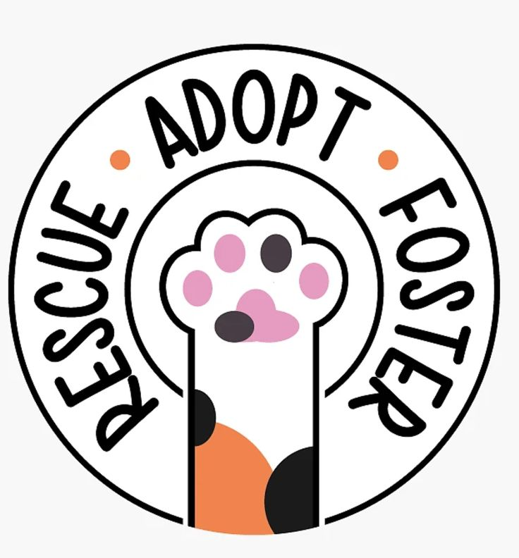

Four simple steps to bring your new friend home
Explore our available animals online or visit our shelter at 14 Ferreira Street, Nelspruit. Read each pet's full profile and find your match.
Book a meet-and-greet session with the animal at our shelter. Bring all household members – including resident pets – to ensure compatibility.
Fill out our simple adoption form. We conduct a brief home check to ensure the animal is going to a safe, loving environment.
Once approved, pay the adoption fee (R350-R600, covering all vet costs) and take your new family member home with a starter care pack.